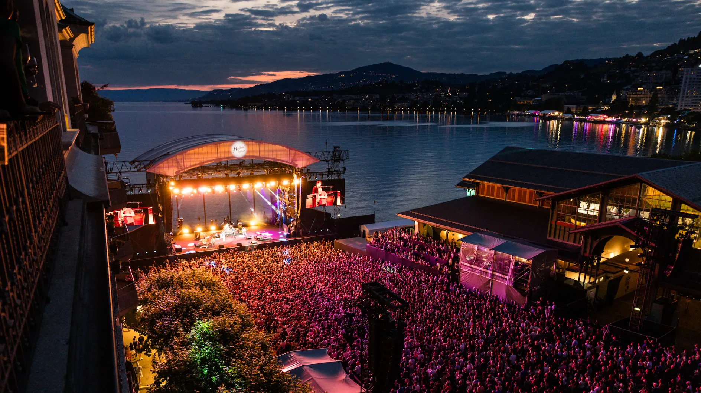
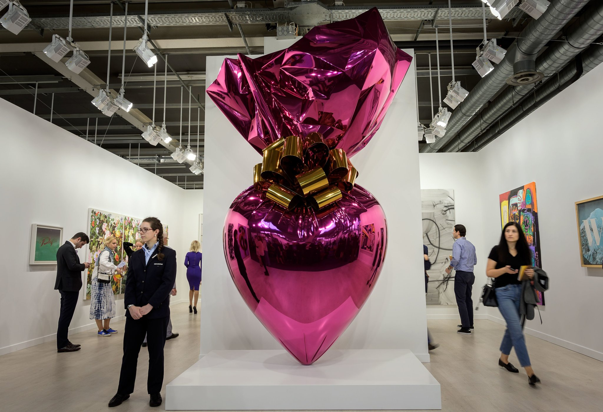
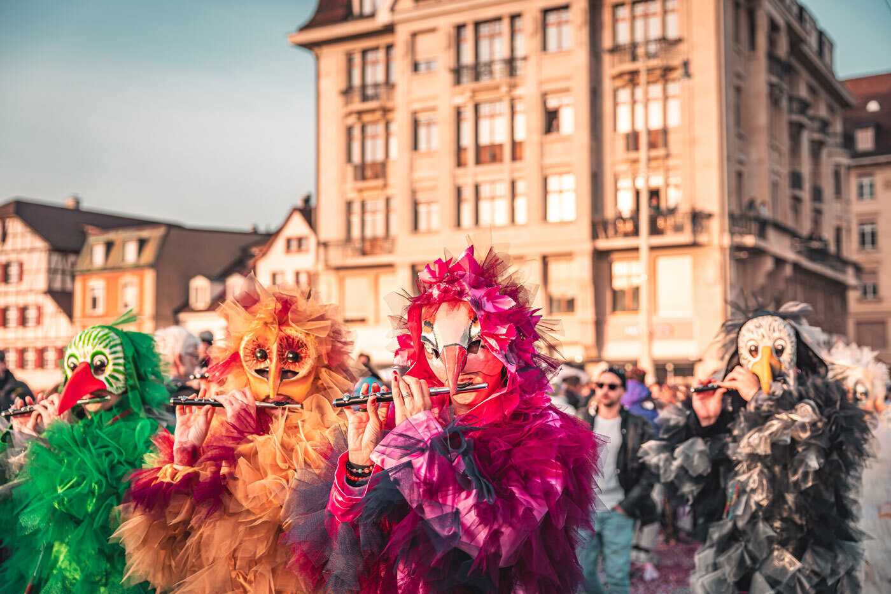
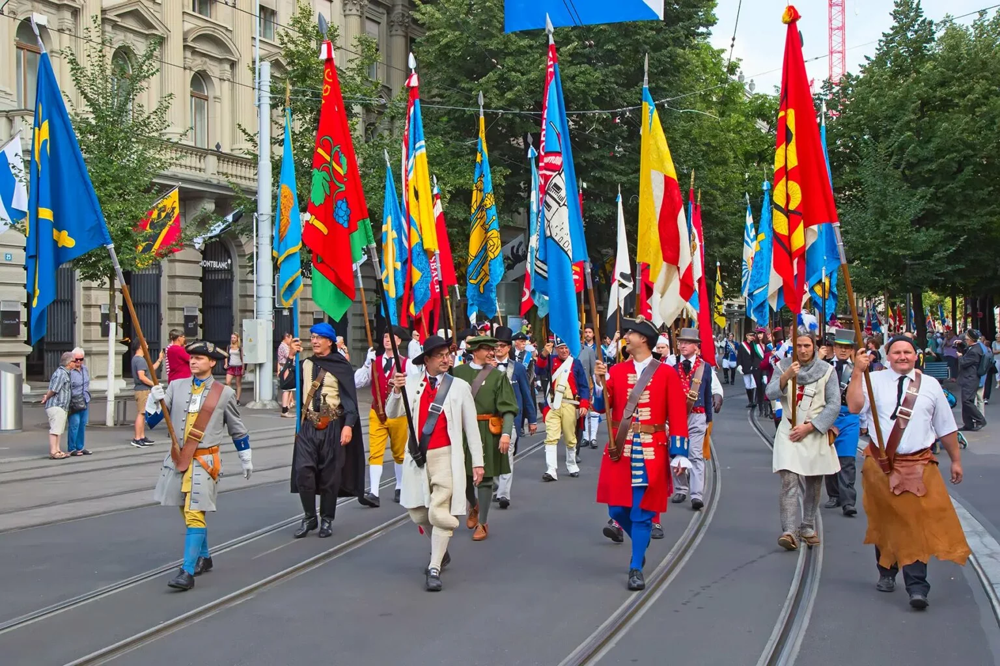

Switzerland's calendar is packed with colourful festivals, world-class sporting events, and unique cultural celebrations rooted in centuries of tradition. Planning your trip around one of these events adds an unforgettable dimension to any Swiss holiday.
Annual Events Calendar
| Month | Event | Location |
|---|---|---|
| January | World Economic Forum (WEF) | Davos |
| February | Basel Fasnacht Carnival | Basel |
| February | Lucerne Carnival | Lucerne |
| March | Geneva International Motor Show | Geneva |
| April | Sechseläuten (Spring festival, burning the Böögg) | Zurich |
| June | Art Basel | Basel |
| June–July | Zürich Street Parade (world's largest techno festival) | Zurich |
| July | Montreux Jazz Festival | Montreux |
| July | Paléo Festival (pop, rock, world music) | Nyon |
| August 1 | Swiss National Day (fireworks nationwide) | All of Switzerland |
| August | Lucerne Festival (classical music) | Lucerne |
| September | Unspunnen Festival (traditional games, alphorn) | Interlaken |
| September | Vintage Wine Festival (Fête des Vendanges) | Neuchâtel / Lugano |
| October | Cow Festival (Désalpe) — cows return from Alpine pastures | Charmey, Gruyères |
| November | Basel World (watch & jewellery fair) | Basel |
| December | Klausjagen (lantern processions for St. Nicholas) | Küssnacht am Rigi |
| December | Christmas Markets | Basel, Bern, Zurich, Montreux |
Highlights

Montreux Jazz Festival
One of the world's most famous music festivals, held in July on the shores of Lake Geneva since 1967. Despite the name, it covers all genres from jazz to pop and rock. Some free concerts available.

Art Basel
The world's leading contemporary art fair, held in June. Three fairs are hosted in Basel, Miami Beach, and Hong Kong. A global gathering of galleries, collectors, and art lovers.

Basel Fasnacht
The "three most beautiful days" — Basel's carnival is a UNESCO Heritage event. Starting at 4am on Monday with Morgestraich (complete city-wide lights-off procession), it's uniquely atmospheric.

National Day (August 1st)
Switzerland's birthday is celebrated with bonfires lit on hilltops across the country, spectacular fireworks over every lake, and community gatherings. The Rütli meadow ceremony is especially symbolic.